Galleria fotografica · Chaberton Cesana 1940–42 14 fotografieRoberto Chirio Cesana 1940 per gentile concessione di Giacchino Gambetta 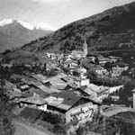001.JPG 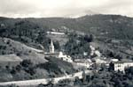002.JPG 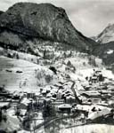003.JPG 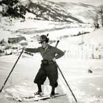004.JPG 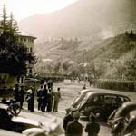007.JPG 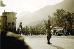008.JPG 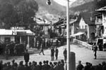009.JPG 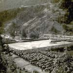010.JPG 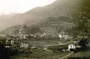011.JPG 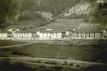012.JPG 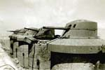014.JPG 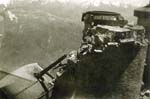015.JPG 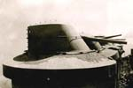016.JPG 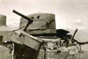017.JPG Tutte le gallerie fotografiche